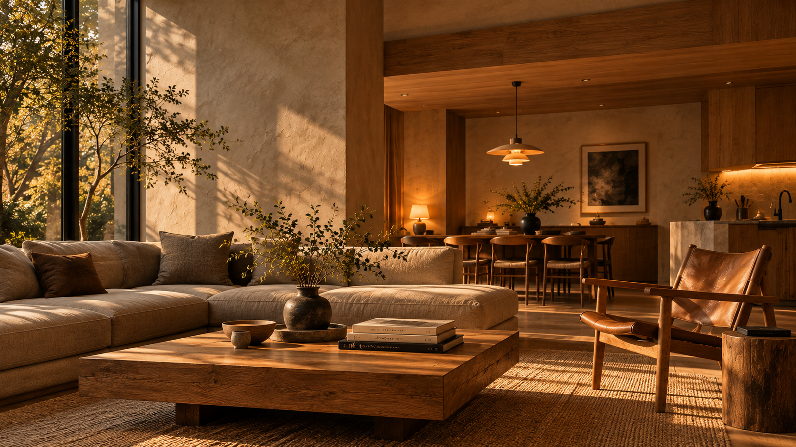

テーブルランプの選び方
心地よい空間をつくる照明
※この記事にはアフィリエイト広告が含まれます。
部屋の雰囲気を少し変えたい。
そんなときに取り入れやすいのが、
テーブルランプです。
大きな家具を買い替えなくても、
光の位置や色を変えることで、
夜の部屋の印象は大きく変わります。

01. テーブルランプが部屋を変える理由
テーブルランプの魅力は、 必要な場所に光を加えられることです。
天井の照明だけで部屋全体を明るくすると、 空間が均一に照らされやすくなります。
一方、テーブルランプを取り入れると、 光が当たる場所と影になる場所が生まれ、 空間に奥行きを感じやすくなります。
サイドテーブルや棚の上など、 好きな場所に置きやすいことも特徴です。
落ち着いた雰囲気をつくりたいなら、 部屋全体を明るくするだけでなく、 必要な場所に光を重ねることを意識してみましょう。
02. 置く場所に合わせて選ぶ
テーブルランプを選ぶときは、 デザインより先に置き場所を決めると 失敗しにくくなります。
ベッドサイド
ベッドサイドでは、 まぶしさを感じにくいことが重要です。
光源が直接目に入りにくいシェード付きのランプや、 明るさを調節できるタイプが使いやすいでしょう。
読書にも使うなら、 本のページを十分に照らせるかも確認しましょう。
リビング
リビングでは、 ソファ横のサイドテーブルや 収納家具の上などが置き場所の候補になります。
木製家具の近くに温かみのある光を置くと、 素材の表情が引き立ちます。
デスク
デスクでは雰囲気だけでなく、 作業に必要な明るさが大切です。
手元を照らす方向を調節できるタイプや、 明るさを切り替えられるタイプが便利です。
設置前のチェック
・置く場所の幅と奥行き
・ランプ本体の高さ
・コンセントまでの距離
・コードが通る場所
・スイッチの位置
03. 光の色と明るさを知る
ランプの印象は、 本体のデザインだけでなく 電球の光によっても変わります。
色温度は2700〜3000Kを目安に
光の色は、一般的に 「K（ケルビン）」という単位で表されます。
2700〜3000K前後は、 温かみのある電球色の目安です。 くつろぎたいリビングや寝室に 取り入れやすい色合いです。
一方、細かな作業をする場所では、 好みに応じて白っぽい光を選ぶ方法もあります。
明るさはルーメンで確認する
電球の明るさを比較するときは、 「lm（ルーメン）」を確認しましょう。
ただし、同じルーメン数でも、 シェードの形や素材によって 周囲への光の広がり方は変わります。
雰囲気づくりの補助照明なのか、 読書などに使う実用照明なのかを 考えて選ぶことが大切です。
・落ち着いた雰囲気：温かみのある光
・読書や作業：手元の明るさを重視
・幅広い用途：調光できるタイプが便利
04. シェードの素材で印象が変わる
シェードは、 光の広がり方とランプの見た目を左右する部分です。
ファブリック
布製のシェードは、 光をやわらかく拡散させるものが多く、 落ち着いた雰囲気をつくりやすい素材です。
ベージュやアイボリーなど、 自然な色合いは木製家具とも合わせやすいでしょう。
ガラス
ガラス製のシェードは、 透明・乳白色・色付きなど、 仕上げによって印象が異なります。
乳白色のガラスは光源をやわらかく見せやすく、 透明なガラスは電球そのもののデザインも 見せることができます。
金属
金属製のシェードは、 光を特定の方向に向ける設計のものが多く、 手元を照らしたい場所にも向いています。
ブラックやシルバー、 真鍮色などの仕上げによって、 インテリアのアクセントにもなります。
05. 予算に合わせて選ぶ
テーブルランプは、 手頃な価格のものから デザイン性の高いものまで幅広くあります。
まずは使う目的を決めて、 予算を考えてみましょう。
気軽に照明を取り入れる
シンプルなデザインのランプから 探してみましょう。 電球が別売りの場合は、 合計金額も確認しておくと安心です。
素材や使い勝手にも注目する
シェードの質感や本体の仕上げ、 調光機能などを比較しながら、 長く使いたい一台を探す価格帯の目安です。
空間の主役になる照明を選ぶ
デザインや素材にこだわったランプは、 明かりをつけていない昼間も インテリアのアクセントになります。
※価格帯は選び方の目安です。 実際の販売価格や仕様は商品によって異なります。
おすすめのテーブルランプ
木製家具や落ち着いた空間に合わせやすい、 テーブルランプをひとつ紹介します。
ARTWORKSTUDIO Espresso-table lamp

木製のベースと布製シェードを組み合わせた、 温かみのあるテーブルランプです。
やわらかな印象のシェードは、 ベッドサイドやリビングの補助照明にも なじみやすいデザイン。
ナチュラルな家具と組み合わせて、 落ち着いた空間をつくりたい方におすすめです。
参考価格：15,400円（税込）
※価格・在庫・仕様は販売ページでご確認ください。
※広告・アフィリエイトリンクを含みます。
ARTWORKSTUDIO Effect-table lamp

セラミックのベースと布製シェードを組み合わせた、 落ち着いた雰囲気のテーブルランプ。
やわらかな光と上品な素材感が特徴で、 ホテルライクな寝室やリビングにおすすめです。
Sサイズ・Lサイズあり。価格・在庫・仕様は販売ページでご確認ください。
楽天市場で商品を見る →※広告・アフィリエイトリンクを含みます。
06. 長く使うために確認したいこと
気に入ったランプを長く使うためには、 購入前に仕様を確認しておくことも大切です。
電球の交換ができるか
LED一体型の製品と、 電球を交換できる製品では、 メンテナンスの方法が異なります。
電球交換式の場合は、 口金サイズや対応ワット数などを 確認しましょう。
調光機能との相性
調光機能を使いたい場合は、 ランプ本体と電球の両方が 対応しているか確認が必要です。
対応していない電球を使用すると、 正常に点灯しない場合があります。
安定性と安全性
小さなテーブルに置く場合は、 ランプの底面サイズや重心も確認しましょう。
布や紙のシェードを使った製品では、 指定された電球の種類や 最大消費電力を守ることが重要です。
1. 置き場所に合うサイズか
2. 用途に合った明るさか
3. 光源がまぶしくないか
4. 電球交換や調光に対応しているか
5. 安全に設置できるか
お気に入りの明かりを、ひとつ。
テーブルランプは、 部屋の雰囲気を変えるだけでなく、 夜の過ごし方を心地よくしてくれる道具です。
ソファの横に、温かな明かりをひとつ。 ベッドサイドに、やわらかな光をひとつ。
まずは自分がよく過ごす場所から、 お気に入りのランプを探してみましょう。
間接照明の配置については、 「空間を変える、間接照明の選び方」 でも紹介しています。
← STILL ROOM トップへ戻る